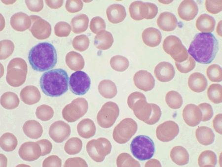
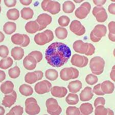

Welcome, here we will provide tips and images
Simply click on what category of cells you are looking for and study away with images and descriptions. When you feel ready, try our quiz!
Neutrophils
Neutrophils are so named because they are not well stained by either eosin, a red acidic stain, nor by methylene blue, a basic or alkaline stain. Neutrophils, are also known as "segs", "PMNs" or "polys" (polymorphonuclears). They are the body's primary defense against bacterial infection and physiologic stress. Normally, most of the neutrophils circulating in the bloodstream are in a mature form, with the nucleus of the cell being divided or segmented. Because of the segmented appearance of the nucleus, neutrophils are sometimes referred to as "segs." The nucleus of less mature neutrophils is not segmented, but has a band or rod-like shape. Less mature neutrophils - those that have recently been released from the bone marrow into the bloodstream - are known as "bands" or "stabs". Stab is a German term for rod.

Lymphocytes
The round, uniform nucleus and small amount of cytoplasm surrounding it are the best identifying characteristics for this cell. Lymphocytes are involved in the specific immune response including antigen-antibody reactions.
Basophils
Basophils are intermediate in size between neutrophils and eosinophils and have simple or bilobed nuclei. They contain many coarse purple granules that can vary in size or shape.

Eosinophils
These cells are 12 - 17 µm in diameter - larger than neutrophils, and about 3 times the size of a red blood cell. You can see that eosinophils only have two lobes to their nucleus. These cells have large acidophilic specific granules - these stain bright red, or reddish-purple.
Monocytes
Monocytes are spherical in shape or may appear amoeboid. They are large in size and have a large nucleus that is usually bean shaped. This characteristic differentiates monocytes from neutrophils, which have several lobes with a divided nucleus. In tissues, monocytes transform to macrophages.